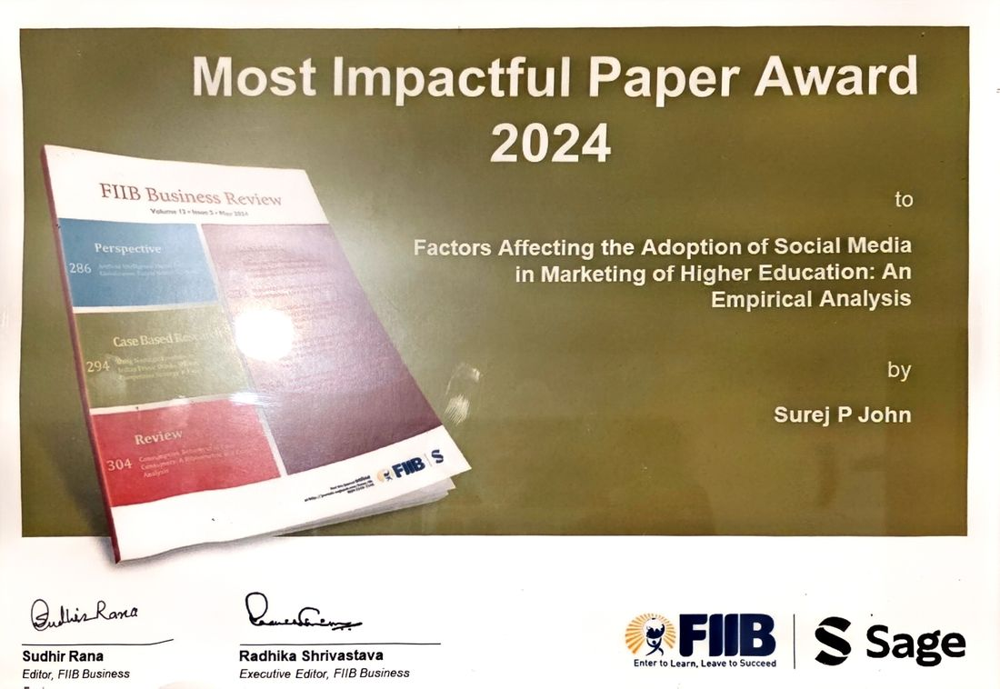
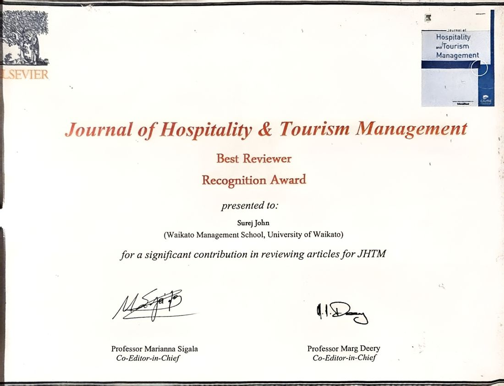
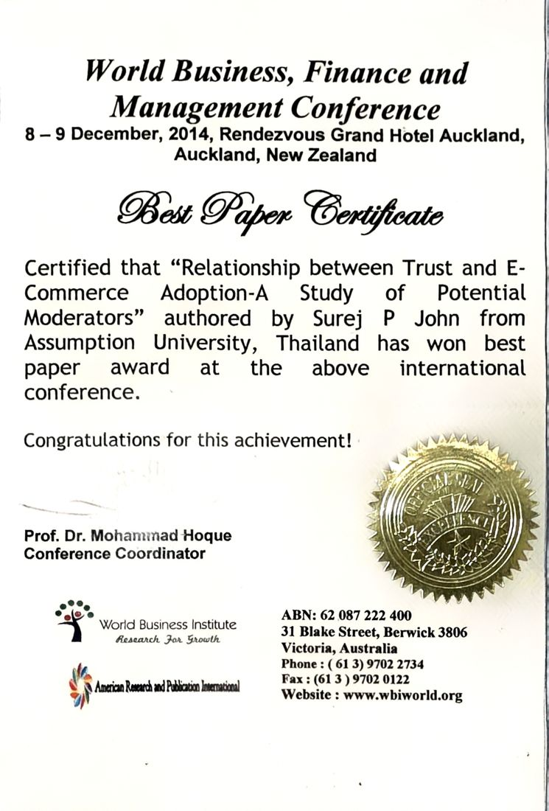
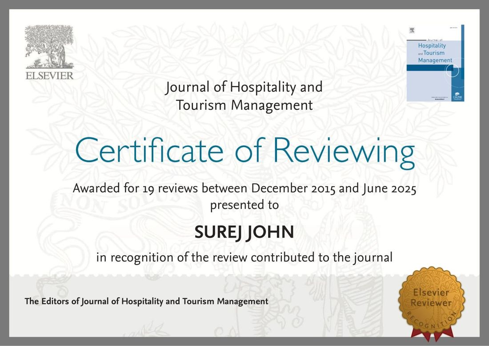
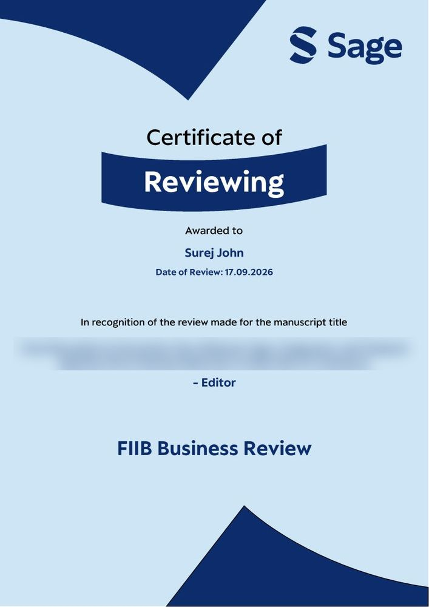

Awards & certifications
Awards and recognition for my research, reviewing and teaching, my formal teaching qualification, and the professional certificates I have completed to keep my digital marketing and data skills current.
Awards

Most Impactful Paper Award 2024, FIIB Business Review
Awarded by FIIB Business Review (Sage) for “Factors Affecting the Adoption of Social Media in Marketing of Higher Education: An Empirical Analysis”, signed by editor Sudhir Rana and executive editor Radhika Shrivastava.

Best Reviewer Recognition Award 2017, Journal of Hospitality & Tourism Management
Presented by Elsevier for a significant contribution in reviewing articles for the journal, while at Waikato Management School, University of Waikato. Signed by co-editors-in-chief Professor Marianna Sigala and Professor Marg Deery.

Best Paper Award, World Business, Finance and Management Conference 2014
For “Relationship between Trust and E-Commerce Adoption: A Study of Potential Moderators”, presented at the international conference held in Auckland, New Zealand, on 8–9 December 2014, while at Assumption University, Thailand.
Recognition

Elsevier Certificate of Reviewing, Journal of Hospitality and Tourism Management
Awarded by the editors for 19 reviews contributed to the journal between December 2015 and June 2025.

Wiley Reviewer Certificate 2025
Awarded by Wiley for serving as a reviewer for the Journal of Consumer Behaviour, signed by co-editors-in-chief Steven D’Alessandro and Varsha Jain.

Sage Certificate of Reviewing, FIIB Business Review
Awarded by the editor in recognition of a manuscript review completed on 17 September 2026. The manuscript title is blurred to keep the review confidential.

Letter of appreciation, Amity University Chhattisgarh
For an international guest lecture to MBA students, “E-Commerce in the AI Era: Trends, Marketing & Consumer Behaviour”, on 9 September 2026, from Amity Business School and the Centre for International Affairs.
Teaching qualification

New Zealand Certificate in Adult and Tertiary Teaching (Level 5)
Awarded by the Open Polytechnic of New Zealand (Kuratini Tuwhera), 18 November 2019. A New Zealand Qualifications Framework qualification (NZQF 2993) in adult and tertiary teaching practice.
Professional certificates
Online courses authorised by Meta and IBM and offered through Coursera. Each can be checked on Coursera.

Measure and Optimize Social Media Marketing Campaigns
Meta, offered through Coursera, 24 February 2023
Verify certificate
Introduction to Social Media Marketing
Meta, offered through Coursera, 21 February 2023
Verify certificatePython for Data Science & AI: Hands-On Development
IBM, offered through Coursera, 29 June 2024
Verify certificate
Data Visualization and Dashboards with Excel and Cognos
IBM, offered through Coursera, 23 June 2024
Verify certificate
Data Analytics Foundations: Turn Data into Insights
IBM, offered through Coursera, 19 June 2024
Verify certificateLooking for a speaker or reviewer?
I welcome invitations for guest lectures, keynotes and journal reviewing.